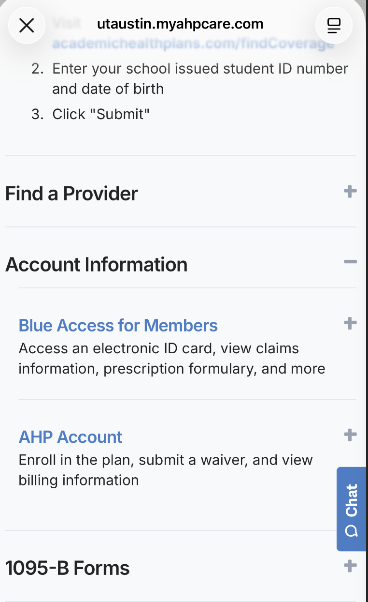

Mandatory UT Student Health Insurance Plan (SHIP) is automatically charged each semester. Check What I Owe → look for "Student Health Insurance" charge. If you have comparable coverage, apply for a waiver via the ISSS Insurance Waiver Guidance Page.
SHIP is optional. You can enroll voluntarily via UHS Insurance. If you have other coverage (parent's plan, marketplace, etc.), no action needed unless you want SHIP.
Go to Registration Information Sheet (RIS). An "Insurance Bar" prevents registration. Clearing it requires either: (1) waiver approval, or (2) SHIP payment showing on What I Owe.
Waiver opens: ~June 1 | Waiver deadline: 12th class day (~early September)
Waiver opens: ~November 1 | Waiver deadline: 12th class day (~early February)
Separate summer waiver if enrolled. Deadline: 4th class day of summer session.
Missed deadline? You must pay SHIP. Late waivers are rarely approved. Contact ISSS Advising immediately.
Common reasons: coverage dates don't span full semester, benefits below minimums, plan not ACA-compliant, missing documents. Review denial email, fix gaps, and re-submit if before deadline.
Payment on What I Owe may take 24-48 hours to reflect on RIS. If still showing after 2 business days, contact UT Service Desk or UHS Billing.
Dependents are NOT automatically enrolled. They can voluntarily enroll in SHIP via UHS Insurance page. No waiver needed for dependents.
SHIP coverage ends last day of semester. If graduating early, contact UHS to discuss coverage extension options (typically 30-60 days post-graduation).
Per UT ISSS guidance for the UT Student Health Insurance Plan (SHIP) administered by Academic HealthPlans (AHP) and Blue Cross Blue Shield of Texas (BCBSTX):
Reference: utaustin.myahpcare.com/archive

UT Austin AHP Archive — insurance plan details & enrollment info
内容来源: UT ISSS Insurance, UHS Insurance, UTCSSA经验分享 | 更新时间: 2025年8月
(Sources: UT ISSS Insurance, UHS Insurance, UTCSSA shared experience | Last Updated: August 2025)
官方最新信息请以 ISSS Insurance 与 UHS Insurance 为准
(For official latest info, refer to ISSS Insurance and UHS Insurance)